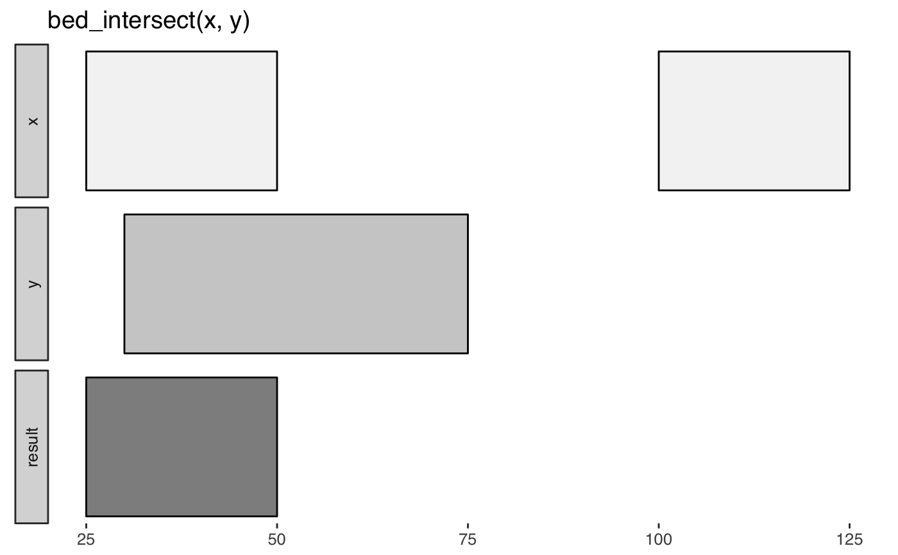
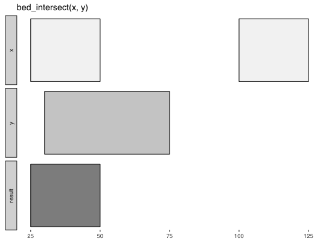

R/bed_intersect.r
Report intersecting intervals from x and y tbls. Book-ended intervals
have .overlap values of 0 in the output.
bed_intersect(x, ..., invert = FALSE, suffix = c(".x", ".y"))
| x | |
|---|---|
| ... | one or more (e.g. a list of) |
| invert | report |
| suffix | colname suffixes in output |
tbl_interval() with original columns from x and y suffixed with .x
and .y, and a new .overlap column with the extent of overlap for the
intersecting intervals.
If multiple y tbls are supplied, the .source contains variable names
associated with each interval. All original columns from the y are suffixed
with .y in the output.
If ... contains named inputs (i.e a = y, b = z or list(a = y, b = z)),
then .source will contain supplied names (see examples).
input tbls are grouped by chrom by default, and additional
groups can be added using dplyr::group_by(). For example,
grouping by strand will constrain analyses to the same strand. To
compare opposing strands across two tbls, strands on the y tbl can
first be inverted using flip_strands().
http://bedtools.readthedocs.org/en/latest/content/tools/intersect.html
Other multiple set operations: bed_closest,
bed_coverage, bed_map,
bed_subtract, bed_window
x <- trbl_interval( ~chrom, ~start, ~end, 'chr1', 25, 50, 'chr1', 100, 125 ) y <- trbl_interval( ~chrom, ~start, ~end, 'chr1', 30, 75 ) bed_glyph(bed_intersect(x, y))x <- trbl_interval( ~chrom, ~start, ~end, 'chr1', 100, 500, 'chr2', 200, 400, 'chr2', 300, 500, 'chr2', 800, 900 ) y <- trbl_interval( ~chrom, ~start, ~end, ~value, 'chr1', 150, 400, 100, 'chr1', 500, 550, 100, 'chr2', 230, 430, 200, 'chr2', 350, 430, 300 ) bed_intersect(x, y)#> # A tibble: 6 x 7 #> chrom start.x end.x start.y end.y value.y .overlap #> <chr> <dbl> <dbl> <dbl> <dbl> <dbl> <int> #> 1 chr1 100. 500. 150. 400. 100. 250 #> 2 chr1 100. 500. 500. 550. 100. 0 #> 3 chr2 200. 400. 230. 430. 200. 170 #> 4 chr2 200. 400. 350. 430. 300. 50 #> 5 chr2 300. 500. 230. 430. 200. 130 #> 6 chr2 300. 500. 350. 430. 300. 80bed_intersect(x, y, invert = TRUE)#> # A tibble: 1 x 3 #> chrom start end #> <chr> <dbl> <dbl> #> 1 chr2 800. 900.# start and end of each overlapping interval res <- bed_intersect(x, y) dplyr::mutate(res, start = pmax(start.x, start.y), end = pmin(end.x, end.y))#> # A tibble: 6 x 9 #> chrom start.x end.x start.y end.y value.y .overlap start end #> <chr> <dbl> <dbl> <dbl> <dbl> <dbl> <int> <dbl> <dbl> #> 1 chr1 100. 500. 150. 400. 100. 250 150. 400. #> 2 chr1 100. 500. 500. 550. 100. 0 500. 500. #> 3 chr2 200. 400. 230. 430. 200. 170 230. 400. #> 4 chr2 200. 400. 350. 430. 300. 50 350. 400. #> 5 chr2 300. 500. 230. 430. 200. 130 300. 430. #> 6 chr2 300. 500. 350. 430. 300. 80 350. 430.z <- trbl_interval( ~chrom, ~start, ~end, ~value, 'chr1', 150, 400, 100, 'chr1', 500, 550, 100, 'chr2', 230, 430, 200, 'chr2', 750, 900, 400 ) bed_intersect(x, y, z)#> # A tibble: 11 x 8 #> chrom start.x end.x start.y end.y value.y .source .overlap #> <chr> <dbl> <dbl> <dbl> <dbl> <dbl> <chr> <int> #> 1 chr1 100. 500. 150. 400. 100. y 250 #> 2 chr1 100. 500. 150. 400. 100. z 250 #> 3 chr1 100. 500. 500. 550. 100. y 0 #> 4 chr1 100. 500. 500. 550. 100. z 0 #> 5 chr2 200. 400. 230. 430. 200. y 170 #> 6 chr2 200. 400. 230. 430. 200. z 170 #> 7 chr2 200. 400. 350. 430. 300. y 50 #> 8 chr2 300. 500. 230. 430. 200. y 130 #> 9 chr2 300. 500. 230. 430. 200. z 130 #> 10 chr2 300. 500. 350. 430. 300. y 80 #> 11 chr2 800. 900. 750. 900. 400. z 100bed_intersect(x, exons = y, introns = z)#> # A tibble: 11 x 8 #> chrom start.x end.x start.y end.y value.y .source .overlap #> <chr> <dbl> <dbl> <dbl> <dbl> <dbl> <chr> <int> #> 1 chr1 100. 500. 150. 400. 100. exons 250 #> 2 chr1 100. 500. 150. 400. 100. introns 250 #> 3 chr1 100. 500. 500. 550. 100. exons 0 #> 4 chr1 100. 500. 500. 550. 100. introns 0 #> 5 chr2 200. 400. 230. 430. 200. exons 170 #> 6 chr2 200. 400. 230. 430. 200. introns 170 #> 7 chr2 200. 400. 350. 430. 300. exons 50 #> 8 chr2 300. 500. 230. 430. 200. exons 130 #> 9 chr2 300. 500. 230. 430. 200. introns 130 #> 10 chr2 300. 500. 350. 430. 300. exons 80 #> 11 chr2 800. 900. 750. 900. 400. introns 100# a list of tbl_intervals can also be passed bed_intersect(x, list(exons = y, introns = z))#> # A tibble: 11 x 8 #> chrom start.x end.x start.y end.y value.y .source .overlap #> <chr> <dbl> <dbl> <dbl> <dbl> <dbl> <chr> <int> #> 1 chr1 100. 500. 150. 400. 100. exons 250 #> 2 chr1 100. 500. 150. 400. 100. introns 250 #> 3 chr1 100. 500. 500. 550. 100. exons 0 #> 4 chr1 100. 500. 500. 550. 100. introns 0 #> 5 chr2 200. 400. 230. 430. 200. exons 170 #> 6 chr2 200. 400. 230. 430. 200. introns 170 #> 7 chr2 200. 400. 350. 430. 300. exons 50 #> 8 chr2 300. 500. 230. 430. 200. exons 130 #> 9 chr2 300. 500. 230. 430. 200. introns 130 #> 10 chr2 300. 500. 350. 430. 300. exons 80 #> 11 chr2 800. 900. 750. 900. 400. introns 100